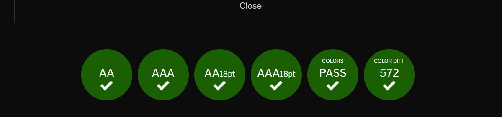
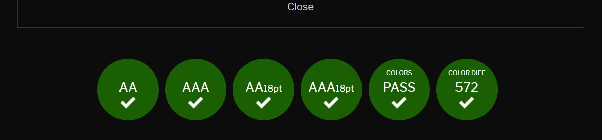

Jag ska göra en sida där man kan läsa och skriva böcker. Min målgrupp är alla de som gillar att läsa samt de som gillar att skriva.
| Vecka | På lektionen | Utanför lektionen |
|---|---|---|
| 4 | Planerar och skissar | |
| 5 | Photoshopar de bilder som behövs | |
| 6 | Börjar med första html-sidan och tillhörande css | |
| 7 | Avslutar första html-sidan och tillhörande css | |
| 8 | Gör andra html-sidan med tillhörande css | |
| 9 | Gör tredje html-sidan med tillhörande css | |
| 10 | Gör fjärde html-sidan med tillhörande css | |
| 11 | Gör femte html-sidan med tillhörande css | |
| 12 | Utvärderingen + Lämna in | |
| 18 |
Skriva planering, Förbättra existerande html & csskod |
|
| 19 |
Forts förbättring av kod, validering av kod & utveckla därifrån |
|
| 20 |
Forts förbättring av kod |
|
| 21 |
Slutföring, uppdatera utvärdering samt lämna in |
Jag har spenderat mycket tid med att komma på min ide och fundera ut hur det ska bli i huvudet.
Idag har jag skapat min första html-sida efter lite strul med github. Sedan har jag laddat ner en hel del bilder som jag ska använda på min webbsida. Jag har även skissat mina ideer på ett papper och bestämt mig för hur jag ska göra.
Idag har jag editat massa bilder från unsplash i photoshop så att de ser ut som framsidor till böcker och lagt in dessa i min html. Jag har specificerat storlek på dessa och hur de ska ligga.
Idag har jag framför allt gjort css delen av min första html-sida. Jag har lagt till grids och även lärt mig mer om hur grid-template-rows & -columns funkar. Det som var svårast idag var nog att få till gridet i naven så att det blev som jag föreställde mig det.
Denna lektion har jag lagt till en pil och försökt sätta den centrerad på sin plats men det har inte gått. Jag har försökt genom både flexbox och grid och det gör inte situationen bättre.
Idag har jag med hjälp av en mediaquary även gjort min förstasida mobilanpassad. Jag hade en del problem med att t.ex få asiden att lägga sig under mina sections och att dela upp textbitarna jämnt. Ett annat problem jag hade var att jag inte fick mina book covers att lägga sig såsom jag ville men det löste jag genom efter mycket strul ändra storleken på bilderna.
Idag gjorde jag min andra html-sida och mobilanpassade den. Dessutom gjorde jag en hamburgaremeny som ska finnas i nav-baren på alla sidor för enklare navigering mellan sidor. Jag har dock inte designat den än. Det jobbigaste den här lektionen var att få till koden kring hamburgaremenyn, framför allt att koppla javascriptet till css och html och förstå koden.
Idag började jag på min tredje HTML-sida. Det som tog upp mest tid idag var egentligen små detaljer, såsom vilken fontstorlek saker skulle ha och att fixa margins etc. Däremot har jag fortfarande en del att jobba på tills inlämningen
Idag har jag tyvärr inte varit jätteproduktiv då jag även har en rapport i gränssnitt som ska in på fredag som jag har jobbat lite på på lektionen, men jag har däremot kollat igenom den nya feedbacken jag fick och gjort saker som att göra loggan till en länk. Jag har dessutom validerat några av mina html-sidor i validator.w3.org vilket även är det jag tänker att jag fortsätter med nästa vecka.
Idag har jag gjort både småsaker som att jag har ändrat filnamnen så att de endast innehåller små bokstäver men jag har också tagit bort hamburgermenyn och ersatt den med en vanlig meny. Detta tog ganska lång tid och var ganska komplicerat just när det gäller att hitta precis vilken kod man behöver ändra i och med att det fanns så mycket. Efter allt detta var gjort fick jag sedan också filtrera ut och ta bort den koden som inte längre behövs i css-filen. Dessutom har jag även validerat mina html-filer och upptäckt att man inte får ha en knapp inuti en länk. Därför ska jag ändra så att det bara är en länk som ser ut som en knapp i stället, detta måste jag dock göra nästa lektion.
Idag har jag först och främst ändrat alla mina bilder så att de är mindre i orginalstorlek då det annars blir extremt stor skillnad mellan orginalstorlek och hur det visas på hemsidan. Jag har ändrat "class=" så de står i rätt format. Jag har även ändrat så att knapparna som stod inuti länkar tidigare nu endast är länkar, nu är det css'en som gör att det bara ser ut som knappar i stället.
När jag testade i Firefox efter att ha utvecklat hemsidan i Chrome fungerade det precis lika bra som i Chrome. Jag behövde alltså inte anpassa någonting efter Firefox.
 

Ovan finns resultaten efter att jag testat min hemsida på contrastchecker. Resultaten är ganska bra, den är godkänd för alla testade typer av färgblindhet och kontrasten är 8.88, vilket jag skulle säga är bra. Jag skulle ju i stället kunnat använda svart text på vit bakgrund för att få ännu bättre kontrast, däremot känner jag att då hade hemsidan känts väldigt tråkigt och det hade förlorat mycket av sitt estetiska element. I och med dom hyfsade testresultaten och med detta i tanke är jag alltså väldigt nöjd med hur färgerna blev.
Jag tycker ändå nu i slutändan att projektets resultat blev bra. Däremot kan jag inte säga samma om min effektivitet under lektioner. Jag borde kanske ha gjort sidorna lite mindre komplicerade, och kanske framför allt använt placeholders i stället för att photoshoppa varje bild. Detta hade nog förbättrat min process lite då det hade gett mig mer tid till själva kodningen osen om jag hade haft tid över i slutet hade jag kunnat göra bilderna. En annan sak som jag skulle kunnat göra bättre är att använda mig av flex till och börja med, i stället för att försöka med grids och sen ändra. Det hade också sparat tid, däremot kände jag i början av det här projektet att jag verkligen inte förstod display:flex och principerna bakom. Det är någonting jag har lärt mig under detta projektet. Däremot är jag fortfarande väldigt nöjd med min slutprodukt, grejen är som sagt kanske bara att jag hade kunnat spara tid på att simplifiera vissa saker. Det är vad jag tar med mig till nästa projekt.